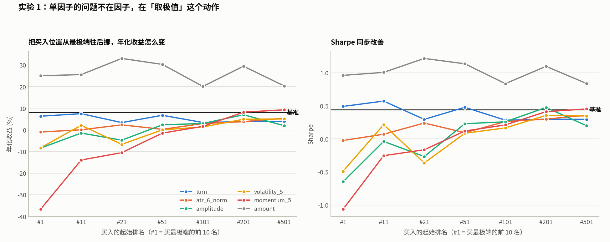
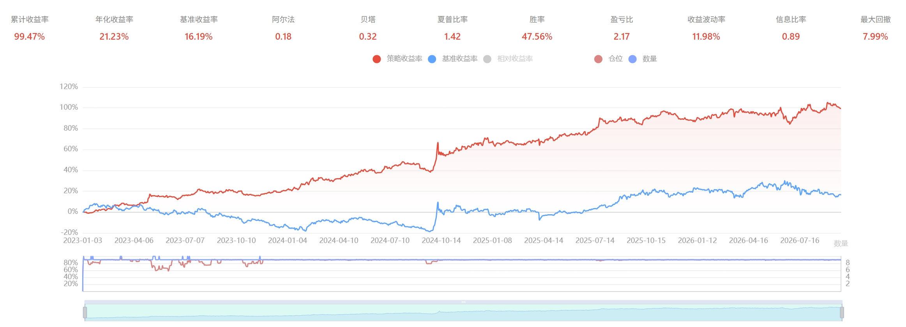
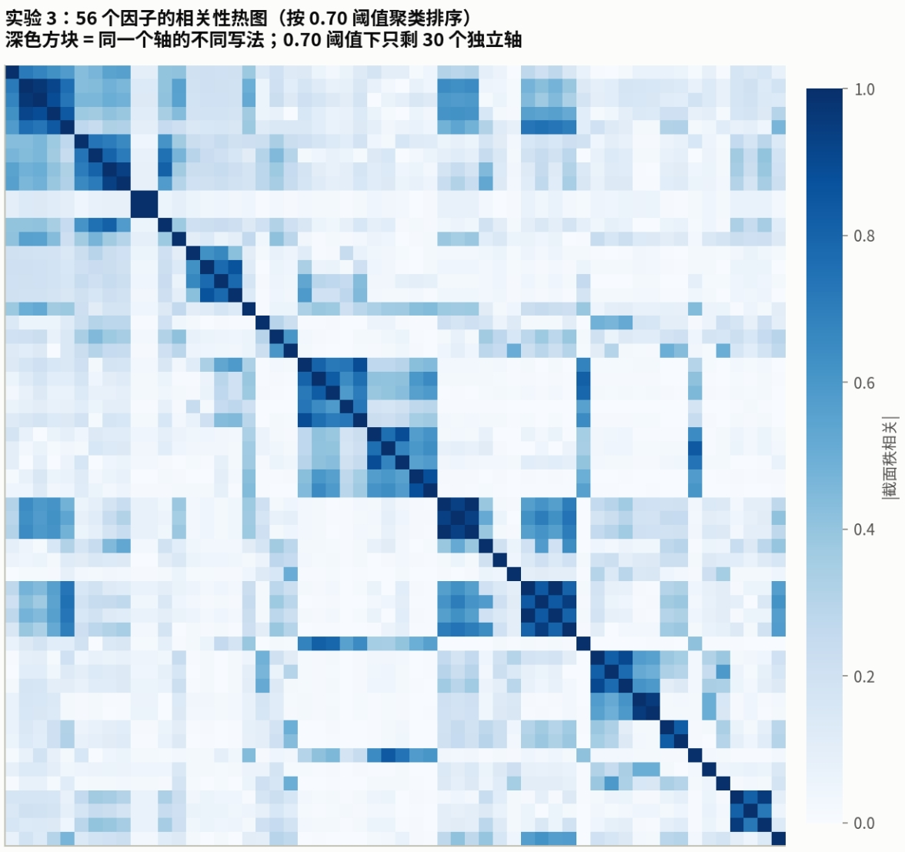
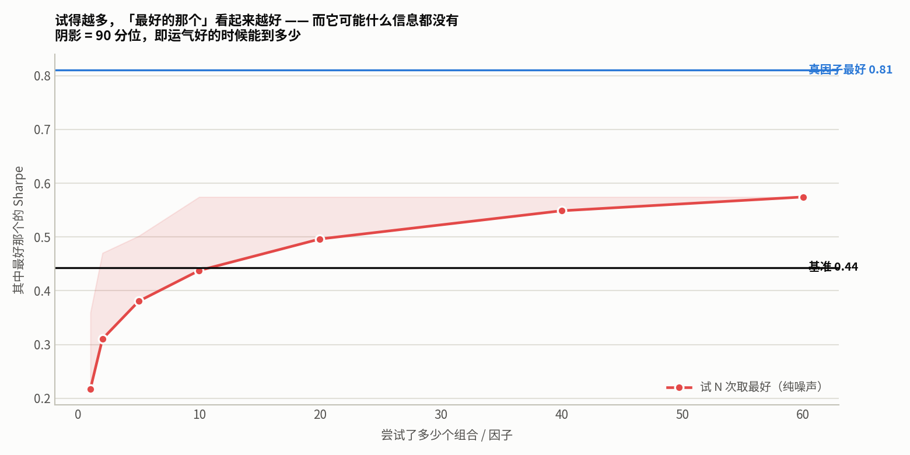

0. 前言
这篇文章主要围绕着一个问题——为啥单因子很难做出超额alpha，因子组合又难在哪里。
说实话这个问题有点大，所以我们进一步拆分成四个子问题，一个压着一个解答：
| 子问题 | 介绍章节 |
|---|---|
| 单因子为什么难做alpha | 第1、2章 |
| 因子组合为什么会有奇效？组合产生了什么化学反应？ | 第3章 |
| 组合数量爆炸，到底爆炸到什么程度 | 第4章 |
| 在这么大的搜索空间里，怎样才不被运气欺骗 | 第5章 |
注：所有结论都是用我本地真实数据做的统计，各位可自行复现。
1. 起跑线不在0，在-5.56pp
在讨论任何因子之前，有一个所有人都容易忽略的成本。
1.1 一个对照试验：完全随机选股
我造了60个纯噪声因子，造法是：给每只票一个固定的随机倾向值，再每天加一点随机扰动（加扰动是为了让它像真因子一样有一定的时间连续性，否则换手率会爆表，不可比）。这些因子里不包含任何信息。
然后用完全相同的规则回测：每天按照这个假因子排序，买前10名，每日最多换1只，等权持有。
| 指标 | 60个随机因子 | 全市场等权基准 |
|---|---|---|
| 年化收益(中位数) | +2.45% | +8.02% |
| 年化收益(最好的那个) | +13.01% | -- |
| Sharpe(中位数) | 0.23 | 0.443 |
| Sharpe(最好的那个) | 0.574 | -- |
| 超额为正的个数 | 4 / 60 = 6.7% | -- |
看到没，随机选10只票，年化还能跑输市场5个多点。
1.2 为什么随机选10只会跑输全市场
原因一：手续费 (≈4.03pp/年)
交易规则是每天最多换1只，持仓10只，每天换手是10%。手续费买入是0.03%、卖出时0.13%，一次换仓的成本就是0.16%。但这0.16%只作用在10%的仓位上，所以每天成本是：
10% * 0.16% = 0.016% (每天)
0.016% * 252 天 = 4.03% (每年)一年下来你要交掉4个点的费用。所以这个市场并不是个零和博弈市场。我可以明确告诉你，这个值还算乐观的，因为中小散户还要面临最低5元费用和印花费用。
原因二：波动损耗 (≈1.5pp/年)
这个概念不太直观，给你举个极端的例子：
| 第一年 | 第二年 | 两年后净值 | 实际结果 | |
|---|---|---|---|---|
| 组合A (低波动) | +10% | -10% | 1.10 × 0.9 = 0.99 | 亏1% |
| 组合B (高波动) | +50% | -50% | 1.50 × 0.5 = 0.75 | 亏25% |
平均涨幅一样，但是波动大的那个组合亏的多，这就是复利在起作用。
10只票的组合，波动远大于4000只票的等权组合。即便是两者平均收益相同，复利之后的结果也会差一大截。这一截就是波动损耗。
这也是为什么仓位管理总是会被人拿出来说的原因。
至此，5个多点的缺口就是这样来的：
5.55pp ≈ 4.03pp + 1.5pp1.3 这件事彻底改变了问题的性质
理想很丰满，现实很骨感。一般人想的是——我要找到一个因子，看它能不能带来超额收益。
实际情况是——你要找到一个能打赢市场的因子，它必须先赚回5.56%，才能追上"什么都不做"，超额还是另外的价钱……
这也是为什么单因子做不出alpha——不是因子没用，是你的因子根本不够填上这5个点的坑位。
这个坑有两个原因是可以优化的：
- 你和券商谈费用，从根源上降低成本；
- 换调仓手段，尽量别碰高频策略，少做T；
- 仓位管理，最简单的就是拿波动率倒数作为仓位权重，使得你持仓的每只票风险平权。
2. 单因子的第二个问题：取极值
上一节说的是成本端，所有策略都会面临的问题。这一节是每个因子都会有的毛病。
2.1 先看失败清单
56 个常用因子去重成 46 个独立轴，每个轴按它的 IC（因子值和收益的相关系数）方向买前 10 只：
| 判定 | 个数 |
|---|---|
| 跑赢基准（超额年化 > 0） | 6 / 46 |
| 稳定跑赢（9 年里至少 7 年跑赢） | 1 / 46 |
| Sharpe 高于基准的 0.44 | 5 / 46 |
2.2 尾部里面装的是"魔丸"，不是"金丹"
按一个因子排序买前 10 名，你买到的是这个因子最极端的 10 个值。问题在于：极端值往往是数据异常或制度产物，不是「这个因子的纯净信号」。我们来看看买最低的10只票买了什么玩意：
| 因子(买最低) | 一字板占比 | 成交额中位数 | 成交额<1000万占比 |
|---|---|---|---|
| amplitude（振幅） | 49.08% | 4886 万 | 15.02% |
| volatility_5（5 日波动） | 7.36% | 5205 万 | 13.81% |
| momentum_5（5 日动量） | 4.96% | 25083 万 | 3.18% |
| amount（成交额） | 4.56% | 337 万 | 88.72% |
| turn（换手率） | 3.26% | 5562 万 | 30.31% |
你们看看振幅和成交额这两个"妖孽"。
- 你如果买振幅最低的10只票，你有一半的概率选到一字板，这一字板我还没统计涨停跌停各多少。
- 如果买成交额最低的10只票，你买的票流动性很低很低，你的策略滑点会非常大，因为后续你会发现手上一堆票卖不出去。
我们将买入位置挪到100名后：
| 因子 | 一字板占比（#1~10） | 一字板占比（#101~110） |
|---|---|---|
| amplitude | 49.08% | 0.05% |
| volatility_5 | 7.36% | 0.05% |
| momentum_5 | 4.96% | 0.16% |
| turn | 3.26% | 0.36% |
2.3 决定性检验：把买入位置往后挪
如果尾部是问题所在，那么不买最极端的，改买靠后一点的，业绩应该改善。
做法：不买第 1~10 名，改买第 11~20 名、第 21~30 名、第 51~60 名……一直到第 501~510 名。其他完全不变。46 个独立轴挨个测太多，下面挑 6 个有代表性的——4 个前面已经证明有尾部问题（momentum_5、amplitude、volatility_5、atr_6_norm），2 个前面说"无异常"当反例对照（turn、amount）。

图：6 个代表性因子，买入排名从 #1 挪到 #501 后的年化收益变化
| 因子 | #1 | #11 | #21 | #51 | #101 | #201 | #501 | 改善幅度 |
|---|---|---|---|---|---|---|---|---|
| momentum_5 | −36.67 | −13.90 | −10.49 | −1.46 | +1.65 | +8.23 | +9.31 | +46.0pp |
| amplitude | −8.38 | −1.45 | −4.73 | +2.35 | +3.00 | +7.02 | +1.98 | +15.4pp |
| volatility_5 | −8.25 | +2.14 | −6.66 | +0.04 | +1.40 | +4.94 | +5.08 | +13.3pp |
| atr_6_norm | −0.96 | +0.08 | +2.36 | +0.28 | +2.96 | +3.85 | +5.42 | +6.4pp |
| turn | +6.36 | +7.53 | +3.39 | +6.79 | +3.43 | +3.86 | +4.02 | 无趋势 |
| amount | +25.05 | +25.59 | +33.07 | +30.30 | +20.13 | +29.47 | +20.36 | 无趋势 |
四个因子的形态非常一致：越往后挪越好。其中 momentum_5 最夸张——买 5 日动量最高的 10 只，年化 −36.67%；买第 501~510 名，年化 +9.31%。同一个因子、同一个方向，只是不买最极端的，结果差了 46 个百分点。
同时也可以发现换手率、成交额似乎是例外。
- 换手率的尾部相对干净，但是换手率尾部的票流动性较差，这些票回测里面能买，实盘滑点会很大；
- 让人意外的是成交额在所有分段都稳定有效：1. 它和市值相关性较大(+0.663)，本质就是小市值的低流动性溢价；2. 收益集中在23年、25年这种小盘行情年；3. 实盘容量有上限，这是小市值策略的通病。这是一个已知、有条件、容量受限的风险溢价。
3. 因子组合化学反应的真相
给各位看一个我新做的策略：

图：红色线是策略绝对净值，蓝线是沪深300基准，区间2023年至今。最大回撤7.99%，年化21.23%，走势比基准平滑不少。
我可以明确告诉各位，这个策略是我用80%的量价数据+20%的财务因子做出来的，给大家看其中的量价单因子的回测：
| 方案 | 年化 | Sharp |
|---|---|---|
| 只用波动因子 | -0.44% | 0.035 |
| 只用反转因子 | -40.49% | -0.969 |
| 合起来 | 21.23% | 1.42 |
三个单独都不赚钱甚至大亏的因子，合起来年化 +21%。这就是「垃圾组合有化学反应」。
具体数据不便公开，但是可以明确的是，量价数据单拎出来确实很菜，其实那些财务数据本身的回测结果也很一般，但是这里所起的反应是因为财务数据将量价数据进行了裁剪，从而避开了量价数据的尾部，这便是因子组合的本质。
那什么情况下组合真的有用？
我不想把话说绝对。组合在两种情况下确实应该有额外价值，只是本轮没测出来：
- 因子方向真正不同时。如果换成方向真正无关的因子（比如低波动 + 高股息 + 低负债），叠加才可能有意义。
- 因子各自都有正向信号时。组合是加权平均，如果每个成分的期望都是负的，平均之后还是负的。指望「三个负的相加变成正的」在数学上就没道理——除非机制是「避开尾部」，而那本来就不是叠加。
4. 组合爆炸有多可怕
4.1 先算一下因子组合数给大家一点小震撼
以我的因子库为例，只有56个因子，从中挑选k个因子进行组合，可能的组合数是 C(56, k)：
| 挑几个 | 组合数 |
|---|---|
| 2 个 | 1,540 |
| 3 个 | 27,720 |
| 5 个 | 3,819,816 |
| 8 个 | 1,420,494,075 |
| 任意个（所有子集） | 2⁵⁶ ≈ 7.2 × 10¹⁶ |
这还只算了"选哪几个"，还没算怎么组合（哪些因子做筛选，哪些因子赋权重），你要把这些算上，那将会是不可列且无限多的连续空间。
4.2 但因子重复度高
真实情况是这 56 个因子里有大量重复。看相关性热图：

图：因子两两截面秩相关热图，深色方块代表高度相关
深色方块就是「同一个东西的不同写法」。给大家看个例子——市值和对数市值，这两应该完全相同，还有成交额和小单买入额，这两相关性在小票上高达85%。
4.3 去重能降600倍
把「秩相关 ≥ 阈值」的因子合并成一个轴，只留一个代表：
| 合并阈值 | 独立轴个数 | C(轴, 3) | C(轴, 5) | 相比 C(56,5) 降低 |
|---|---|---|---|---|
| 0.95 | 50 | 19,600 | 2,118,760 | 1.8 倍 |
| 0.90 | 46 | 15,180 | 1,370,754 | 2.8 倍 |
| 0.80 | 35 | 6,545 | 324,632 | 12 倍 |
| 0.70 | 30 | 4,060 | 142,506 | 27 倍 |
| 0.60 | 24 | 2,024 | 42,504 | 90 倍 |
| 0.50 | 21 | 1,330 | 20,349 | 188 倍 |
| 0.40 | 17 | 680 | 6,188 | 617 倍 |
| （不去重） | 56 | 27,720 | 3,819,816 | — |
这里你应该给相关系数磕一个，它帮你从382万的样本空间容量降到了6188，降了617倍。
但是别高兴太早，6188次搜索对一台计算机来说简直不要太简单，回测一次10秒，你跑个17个小时就能拿到结果，但是引出了一个大问题：搜索次数越多，纯靠运气冒出漂亮结果的概率越大。
而且合并阈值本身是个主观选择。用 0.40 合并会把相关 0.45 的两个因子当成同一个，可能丢掉真实的差异；用 0.95 合并等于没去重。这个阈值本身就是一个研究者自由度。
5. 什么门槛拦得住运气
搜索的代价是假发现，拿机器学习的术语来讲叫过拟合。试得越多，纯靠运气冒出漂亮结果的概率越大。这一章用随机因子量化这个代价，并回答「用什么门槛才拦得住」。
5.1 试N次取最好，能好到什么程度
拿第 1 章那 60 个纯噪声因子，模拟「我试了 N 个，只报告最好的那个」：

图：纯噪声因子试 N 次只报告最好结果，最优 Sharpe 随 N 上升的曲线
看到没，我试了10次就要超过基准了，试到60多次这个最高夏普基本就要平了。但是这些因子里面没有一点信息！
所以以后各位看量化相关的文章的时候，看到我找到了一个Sharp 0.57 的策略这句话的时候，如果不说明试了多少次，那这篇文章的含金量就要打一个大大的问号。
上面说的还只是「明摆着的试」——自己数得清试了多少次因子。更麻烦的是那些你根本没意识到自己在试的选择。
5.2 研究者自由度：你已经试了多少次？
除了明确的搜索，还有一类隐形的搜索，学术上叫研究者自由度（researcher degrees of freedom）：
| 你悄悄试过的选择 | 相当于多少次搜索 |
|---|---|
| 回测区间从 2018 开始还是 2015 开始 | ×2 |
| 持仓 50 只还是 100 只 | ×2 |
| 每天换 1 只还是每 5 天换 1 只 | ×2 |
| 去重阈值 0.9 还是 0.7 | ×2 |
| 成交额门槛 1000 万还是 2000 万 | ×2 |
| 预测周期 5 / 10 / 20 天(针对机器学习策略) | ×3 |
| 合计 | ×96 |
每个看起来无害的「参数怎么选」，都在乘上你的搜索次数。上面这 6 个选择合起来就是 96 倍，配合上面那张表——光靠这些自由度就能轻松刷出高 Sharpe 策略。
唯一的解药是记账：把你试过的每一个配置都写下来，包括失败的。报告结果时同时报告「我一共试了 N 次」。
6. 一套可操作的方法论
第0步 先测随机选股当起跑线
做法：造 30~60 个纯噪声因子，用你真正的交易规则回测，记下年化和 Sharpe 的中位数。
为什么：这是你真正的对照组。拿因子成绩和 0 比、或者和沪深300 比，都会过于乐观。本项目实测起跑线是年化 +2.45%，Sharpe 0.23，而不是 0。
顺带的好处：这批随机因子的 Sharpe 分布就是你的「运气刻度尺」——以后任何结果，先问它在这个分布里排第几。
第1步 把股票池的可交易性搞干净
做法：排除一字板、收盘涨停股，设定成交额下限。
为什么：不做这一步，回测会「买到」买不进的涨停板。本项目第一版因此跑出 Sharpe 4.62。
第2步 去重，数清自己有几个独立想法
做法：有一定交易经验的可以凭自己对数据的理解筛选出一批风格不相关的因子，若无经验，可通过算法来完成：算所有因子的截面秩相关（不是普通相关），按阈值贪心聚类，每个簇留一个代表。
为什么：56 个因子名字不等于 56 个想法。实测 0.4 阈值下只剩 17 个独立轴。不去重的话，你的「组合」很可能是同一个因子加了三遍。
具体提醒：取对数、转百分位排名、改变量纲，在秩相关下完全等价，一定会被识别为同一个轴。
第3步 分箱体检
做法：每个因子不只测「买前 10 名」，而是测第 1、11、51、101、201、501 名各买 10 只，画出「年化 vs 起始排名」的曲线。
为什么：这条曲线告诉你因子在哪个区间有用。市值在最极端处是 -87%，剔除尾部个股是 +34%。但我们都知道小市值在市场中效果的显著性，只测尾部会把这个因子判为「垃圾」，而它其实只是被用错了地方。
第4步 组合时先处理极端值，再谈加权
做法：先把每个因子裁剪到 1%~99% 分位（超出的按边界算），然后转成截面百分位排名，最后等权平均。
为什么：第 3 章证明，组合的主要价值来自处理极端值，不是信号叠加。裁剪 + 等权是 0 个拟合参数的做法，不会过拟合。
- 第 1 步：每个因子裁剪到 [1% 分位, 99% 分位]
- 第 2 步：转成当日截面百分位排名（0~1）
- 第 3 步：按 IC 方向统一符号（IC 为负的取相反数）
- 第 4 步：直接平均
挑因子的原则：从独立轴里选 3~5 个方向真正不同的，按经济逻辑挑而不是按回测成绩挑。
第5步 留一段真正没碰过的数据
做法：在动手之前就把最后 2~3 年封存，整个研究过程完全不看。所有配方定稿之后，只在这段上跑一次，跑完就认，不许回头改。
为什么：前四步做得再干净，只要你在同一段数据上反复看结果，就已经在泄漏信息。「封存数据」是唯一不依赖自律的保护措施。